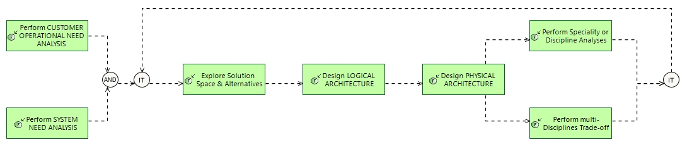

Traversing Non-functional Issues
Engineering Process
Engineering Capabilities > Define a Solution satisfying Need > Traversing Non-functional Issues
Challenge: How to find an acceptable compromise between major functional and non-functional issues (1) .
- Analyse and characterise expectations for each viewpoint in the need descriptions
- when designing solution architecture, submit each alternative and design decision to analysis of consequences for each viewpoint, in order to reach the best compromise between all
- once acceptable architecture orientations are reached, perform fine grain analysis and simulations for each viewpoint and expectation, in order to confirm compromise choices
(1) Examples of non-functional issues are: safety, [cyber]security, reliability, dependability, maintainability, durability, sustainability, integrability, testability, size weight and power, etc... and of course performances and product line.
The way each of these issues is considered and adressed in engineering, notably by related disciplines and specialities, is called a "viewpoint" on engineering.
Related Diagrams
2 Traversing Nonfunctional Issues

This figure describes
How to find an acceptable compromise between major functional and non-functional issues .
Examples of non-functional issues : safety, [cyber]security, reliability, dependability, maintainability, durability, sustainability, integrability, testability, size weight and power, etc... and of course performances and product line.
The way each of these issues is considered and adressed in engineering, notably by related disciplines and specialities, is called a "viewpoint" on engineering.
- Analyse and characterise expectations for each viewpoint in the need descriptions
- when designing solution architecture, submit each alternative and design decision to analysis of consequences for each viewpoint, in order to reach the best compromise between all
- once acceptable architecture orientations are reached, perform fine grain analysis and simulations for each viewpoint and expectation, in order to confirm compromise choices
For each step of this process, involving an engineering task or activity, the description gives some hints and methological recommendations. These recommendations are complementary with the description of the involved activity per se, in the context of the engineering concern and the process.
Contribution of each engineering activity to this process
| Engineering activity | Specifics of activity for this process |
|---|---|
|
|
Operational Analysis is the place to analyse, for each non-functional viewpoint, its context, constraints, opportunities, critical use cases, regulations, etc.
For example, for safety viewpoint, feared events should be identified along with related operational scenarios and operational consequences to evaluate their criticality;
Beside this analysis work, operational simulation can help illustrate operational processes and scenarios captured in the operational analysis; it can be fed from these, and in turn can valuate or complement the analysis itself with simulation results. |
|
|
Beyond customer requirements and regulations refering to each viewpoint (safety insurance level, reliability figures, cyber-security and confidentiality level, etc.), non-formalised constraints will be allocated to the elements constituting the system need functional analysis : e.g. level of criticity of a function, functional chains likely to produce a feared event, required reconfiguration functions for dependability, rainy days scenarios when facing a threat, etc. Along with this system need analysis formalisation, simulations may complement the need understanding and description, the expected system behaviour when facing undesired events, etc. |
|
|
Each major non-functional viewpoint will shape definition of solution alternatives, for example by suggesting state-of-the-art architectural patterns to cope with non-functional constraints. It will also contribute to evaluation and choice criteria, to early eliminate alternatives that will not fulfill related constraints identified in need analysis. Functional or behavioural simulation means are useful to detect flaws and inadequacies in candidate alternatives, as early as possible. |
|
|
The (almost) final compromise between former analyses in 'Explore Solution Space & Alternatives', 'Perform multi-Disciplines Trade-off' and 'Perform Speciality or Discipline Analyses' is obtained in an iterative manner, each detection of issue or flaw leading to reconsidering the global compromise. When all analyses converge towards one proven satisfactory design, justification files can be formalised, and the architecture design be finalised. |
|
|
Architecture design is finalised only when the former analyses have given expected results verifying that the obtained compromise is satisfactory. |
|
|
When the number of alternatives has been reduced by 'Explore Solution Space & Alternatives' activity, the remaining ones are evaluated in a more precise manner, against most important fucntional and non-functional viewpoints. Each engineering or architecture decision is to be submitted to multi-viewpoint analysis, so as to check that satisfyong one of them does not impede or degrade others (e.g. grouping functions on one execution node to optimise performance, could lead to introducing new common mode failure in the safety domain). In order to be efficient, this analysis requires a short loop timing, so as to apply it at each major definition and design choice or decision. This means that the level of detail of architecture description and of analyses will stay at a relatively coarse grain. More in-depth analyses will be considered later in 'Perform Speciality or Discipline Analyses'. This approach mainly uses multi-purpose architecture analysis techniques and tools, in which constraints and golden rules of each discipline and speciality are checked accordingly. |
|
|
Once the candidate solution architectures are reduced to just one or a few, 'Perform multi-Disciplines Trade-off' ensures that a coarse grain, multi-viewpoint analysis, definition has reached a good compromise between all major viewpoints. But this coarse-grain analysis must be confirmed and deepened for each discipline and speciality, applying state-of-the-art approaches. This is done in each domain, with fine-grain architecture and design descriptions, focused on one single viewpoint mainly; it uses dedicated speciality engineering methods and tools, along with simulation environments and models. These analyses and tools should be initialised by the common designed architecture description, sio as to ensure coherency and completeness of analyses. Note that this activity can also be run at any time when questions or issues arise regarding disciplines and specialities, including in early analysis if needed. |